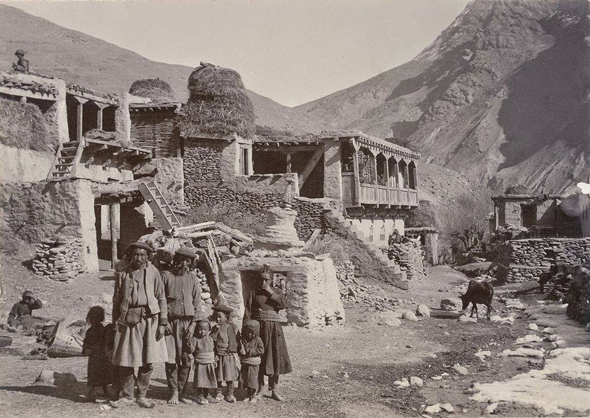

Himachal Pradesh, a northern Indian state nestled in the Himalayas, has a rich and diverse history shaped by its geography, culture, and political dynamics.
Ancient Period
Early Settlements:
Cave Paintings: Archaeological sites like the rock shelters of Bhimbetka showcase
cave paintings that suggest human activity in the region thousands of years ago.
Stone Tools: Excavations have revealed stone tools and artifacts, indicating the
presence of hunter-gatherer communities.

Medieval Period
The medieval period in Himachal Pradesh, roughly spanning from the 8th to the 16th centuries, was marked
by the rise of local kingdoms, cultural developments, and significant interactions with neighboring regions.
Rise of Rajput Kingdoms:
Several Rajput clans established their rule over different parts
of Himachal Pradesh, forming small but influential kingdoms. Notable among these were the Kullus,
Chamba, Mandi, and Bilaspur kingdoms.
The region was characterized by a patchwork of small states, each ruled by local chieftains.
These kingdoms often engaged in alliances and conflicts, shaping the political landscape.